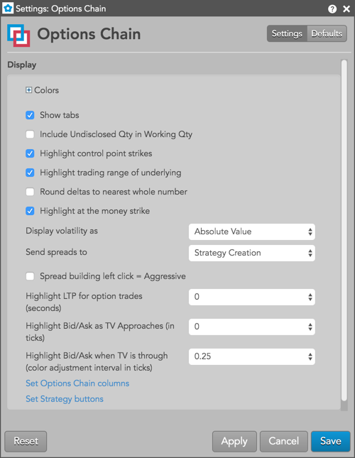

Context menu settings
The following setting options are available for the underlying futures contract and/or individual options contract:
- Open Vol Curve Manager — Opens the Vol Curve Manager widget seeded with the current expiry. This setting is available when you right-click the top panel of the Options Chain.
- Open — Allows you to open either MD Trader or an Order Ticket for an underlying futures contract or options contract. In addition, you can open the following widgets for an individual options contract:
- Strategy Creation
- Blocktrader
- Time and Sales
- Submit RFQ — Submits an RFQ for an underlying futures contract or individual options contract. Right-click the best Bid and Ask price for an underlying contract, or the data unique to a Call or Put options contract to select this setting.
- Send to Watchlist — Sends an underlying futures contract or individual options contract to the Watchlist widget. Right-click the best Bid or Ask price for an underlying contract, or the data unique to a Call or Put options contract to select this setting.
- Open Vol Calculator — Opens the Volatility Calculator for the selected options instrument.
- Transpose rows and columns — Switches the display of the rows and columns in the widget.
Available settings
These settings affect only the selected Options Chain widget. To update the default settings with these value for newly-opened Options Chain widgets, or to apply them to existing opened widgets, click Defaults.

{% include settings/options-chain-menu-settings.html %}